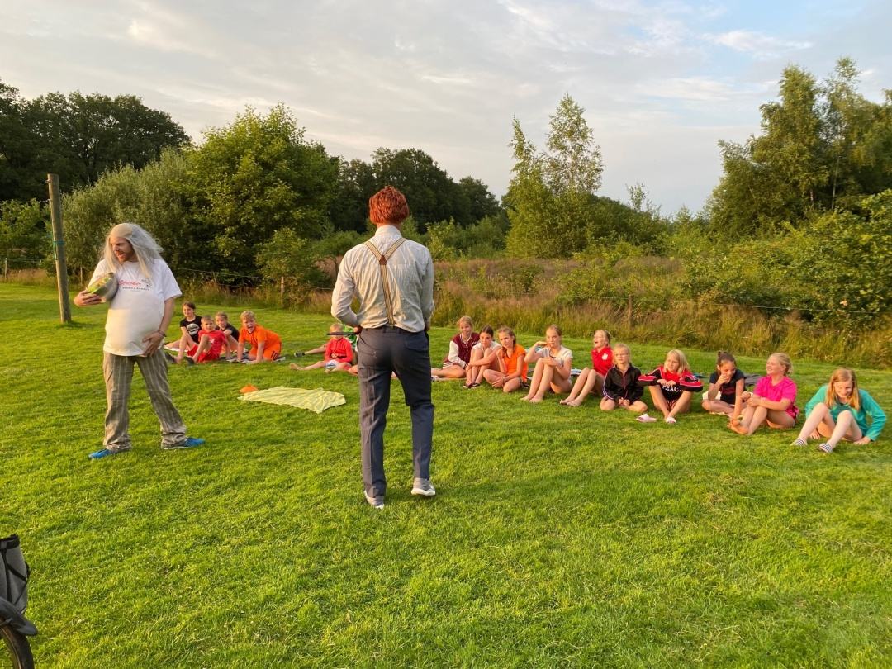

KLAARSTOMEN VOOR DE TOEKOMST
Al jaren draait DOS’46 in de top mee. Daar zijn wij trots op en werken we hard voor. En dan bedoelen we
niet alleen de trainingsintensiteit, maar ook de weg ernaar toe. Zo staat de Airdome voor het 2e jaar en
blijven we doorontwikkelen met KID: Korfbal instituut DOS’46.
Maar sporten is meer dan alleen resultaten boeken. Met je team train je hard om beter te worden,
maar ontstaan er ook mooie vriendschappen en heb je veel plezier. En dat vinden we belangrijk. Daarom zijn er vele mooie georganiseerde activiteiten zoals bijvoorbeeld de kampweek, maar zijn we ook
gestart met Walking Korfbal en onderzoeken we de mogelijkheid om G-Korfbal op te starten. Iedereen
kan zich blijven ontwikkelen.

Al 54 jaar een week vol plezier, spellen, muziek, feest, zwemmen,
gekkigheid, avontuur, spektakel, spanning en sensatie. Kinderen die in leeftijd van E (2e jaars),
D of C zitten, mogen mee met de kampweek. De week duurt maar liefst acht dagen (zeven nachten),
van zaterdag tot zaterdag, de eerste week van de zomervakantie.
De kampweek is het voorbeeld van de saamhorigheid en
het clubgevoel bij DOS’46. De week staat in het teken van
samen plezier maken. Iedereen wordt gestimuleerd om samen lol te hebben, er wordt nooit iemand buitengesloten.
KAMPLEIDING
Naast dat er altijd een hoop kinderen mee gaan, is er ook
een hechte groep jongeren die elk jaar met liefde een week
met de kinderen op pad gaat. Het is niet altijd gemakkelijk
om de hele week vol de houden, maar door de ‘koffi e momentjes’ is het altijd goed te doen.
KOFFIE MOMENTJE
Het koffi e momentje is een periode van ongeveer 15 minuten waarin de leiding niet gestoord mag worden. Dit moment is er om even tot rust te komen en te bespreken wat
er in het volgende dagdeel gedaan gaat worden.
DE DOOP
De doop is de eerste dagen van de kampweek altijd het gesprek van de dag, de zenuwen rijzen soms de pan uit bij de
eerstejaars kinderen (de groentjes). Dit wordt vaak enorm
versterkt door de groteske verhalen van oudere jaar’s over
hun doop. Aan het einde van de rit valt het altijd allemaal
heel erg mee en is er vaak vooral gelachen.

RODE DRAAD
Het befaamde ‘rode draad’ spel, een competitie waarin
elke kampleider een team onder zijn hoede heeft. Elke dag
wordt er een spel gespeeld waarbij er punten verdiend
kunnen worden. Aan het einde van de week is er zo één
grote winnaar!